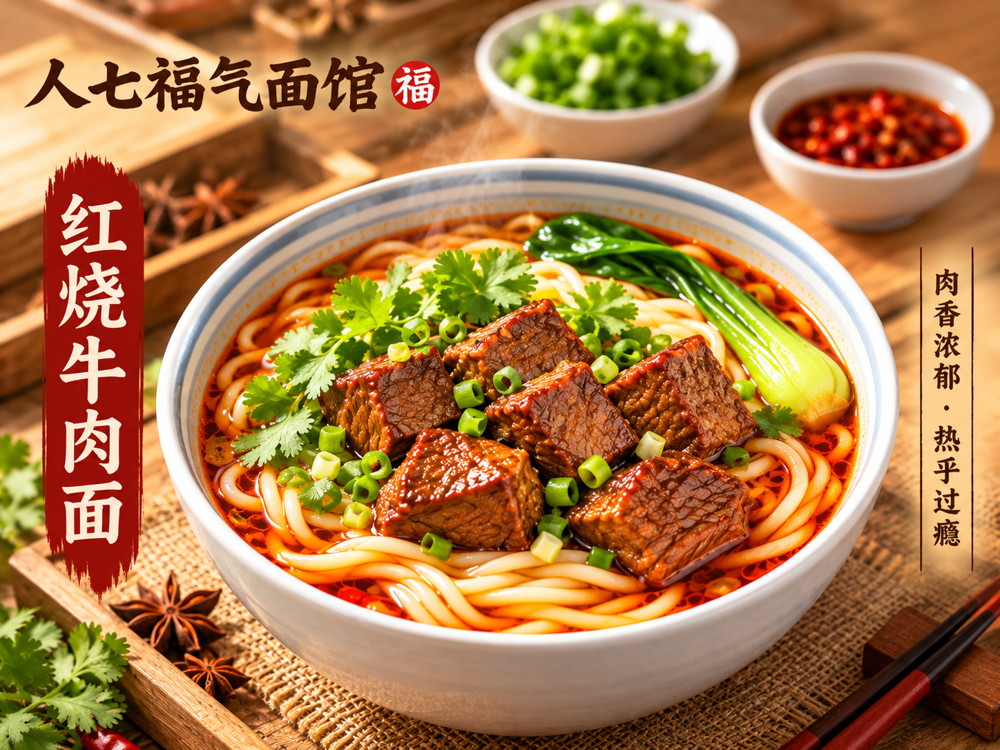
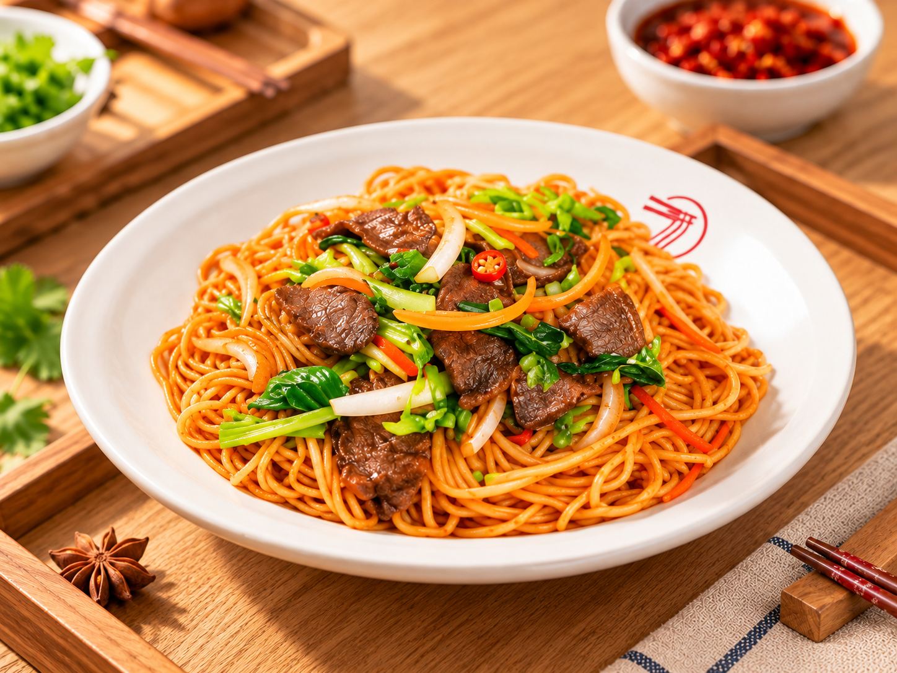

品牌氛围
以暖木色、书法字体和红色强调信息构成餐饮识别，将“热气、牛肉、汤鲜”转化为直接可读的视觉信息。
菜品系列原图


外卖平台应用模拟
将头图、菜品图和信息层级放入平台场景中检查可读性与系列一致性。
界面设计模拟，非真实上线及经营数据
以暖木色、书法字体和红色强调信息构成餐饮识别，将“热气、牛肉、汤鲜”转化为直接可读的视觉信息。


将头图、菜品图和信息层级放入平台场景中检查可读性与系列一致性。
界面设计模拟，非真实上线及经营数据